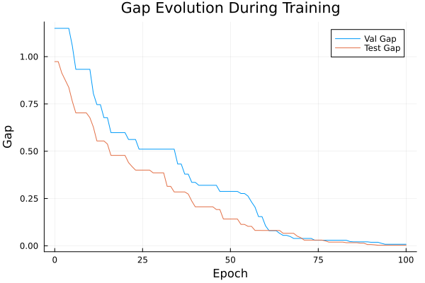
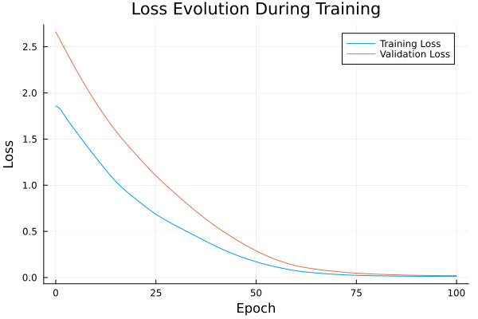

Basic Tutorial: Training with FYL on Argmax Benchmark
This tutorial demonstrates the basic workflow for training a policy using the Perturbed Fenchel-Young Loss algorithm.
Setup
using DecisionFocusedLearningAlgorithms
using DecisionFocusedLearningBenchmarks
using MLUtils: splitobs
using PlotsCreate Benchmark and Data
b = ArgmaxBenchmark()
dataset = generate_dataset(b, 100)
train_data, val_data, test_data = splitobs(dataset; at=(0.3, 0.3, 0.4))(DecisionFocusedLearningBenchmarks.Utils.DataSample{@NamedTuple{}, @NamedTuple{}, Matrix{Float32}, Vector{Float32}, Vector{Float32}}[DataSample(x=Float32[0.582934 -0.252059 … -0.385645 -0.6523; 0.0316947 -1.42268 … -0.0822249 0.0732241; … ; 0.458865 0.00758241 … -1.82436 -0.836332; -0.761752 1.75795 … 1.31737 -0.330172], θ=Float32[-0.0740595, -0.859898, 1.13161, 1.32229, -0.12676, 0.291715, 0.618909, 1.78858, -0.803565, 0.310137], y=Float32[0.0, 0.0, 0.0, 0.0, 0.0, 0.0, 0.0, 1.0, 0.0, 0.0]), DataSample(x=Float32[0.920193 1.45358 … -0.953495 0.271877; -0.88495 -1.32672 … 0.963466 -1.36887; … ; -0.594307 -0.807844 … -0.897963 0.0727115; -1.16636 -0.276757 … -2.95988 0.394099], θ=Float32[0.821124, 0.199996, -0.168797, 0.140066, 1.42216, -0.684485, -1.1199, 0.506826, 2.74896, -1.6139], y=Float32[0.0, 0.0, 0.0, 0.0, 0.0, 0.0, 0.0, 0.0, 1.0, 0.0]), DataSample(x=Float32[-0.496111 0.608906 … 0.686959 0.321936; -0.475571 0.209743 … -0.0385997 -0.456016; … ; -0.130577 0.0493139 … 1.04437 0.2855; 1.37485 -0.792325 … 0.84784 0.627963], θ=Float32[-0.766413, 0.206009, -0.897045, 0.722767, -0.128903, -0.058728, -2.68606, -1.04828, 0.227797, -1.19704], y=Float32[0.0, 0.0, 0.0, 1.0, 0.0, 0.0, 0.0, 0.0, 0.0, 0.0]), DataSample(x=Float32[-0.752627 -0.350154 … -1.50207 -1.5908; 0.650497 -0.673837 … 0.530301 -0.0966778; … ; 1.09728 0.0289632 … -1.42413 -0.849718; -1.13922 -0.810792 … 0.642642 0.441835], θ=Float32[1.40649, 0.432682, 0.92316, -0.0474904, 0.47311, 0.175475, 0.796079, 0.924023, -0.532277, -0.282335], y=Float32[1.0, 0.0, 0.0, 0.0, 0.0, 0.0, 0.0, 0.0, 0.0, 0.0]), DataSample(x=Float32[-2.12048 -0.65356 … -0.723443 0.699451; -0.529061 0.0815363 … 0.556526 -0.372316; … ; -0.751445 -0.152687 … -0.218018 -1.37669; -0.988196 1.47253 … 0.943401 -1.24461], θ=Float32[0.715477, 0.0276609, 2.09634, 0.500047, 0.147922, 2.24982, -0.542395, 0.642802, 0.522337, 1.4733], y=Float32[0.0, 0.0, 0.0, 0.0, 0.0, 1.0, 0.0, 0.0, 0.0, 0.0]), DataSample(x=Float32[-0.434155 1.10316 … 0.239095 1.17697; -0.185078 -1.77401 … 0.170626 -0.511138; … ; 0.413732 0.304766 … 0.0466867 0.254802; -0.281365 0.323035 … -2.06291 -0.231173], θ=Float32[-0.129794, -0.93443, 0.383305, 0.301762, 1.84552, -0.723948, -2.49176, -0.320405, 1.60562, -0.000236664], y=Float32[0.0, 0.0, 0.0, 0.0, 1.0, 0.0, 0.0, 0.0, 0.0, 0.0]), DataSample(x=Float32[1.10252 0.78704 … -1.29346 -0.600223; 0.370863 0.121965 … -0.422163 1.34315; … ; 0.96928 -1.15121 … -0.137598 -0.317856; -0.283796 -0.606945 … 0.787356 -0.514374], θ=Float32[-0.0142676, 1.14358, -0.499377, 1.13057, -0.0837548, 1.40644, -0.506771, -0.974604, -0.74977, 0.677831], y=Float32[0.0, 0.0, 0.0, 0.0, 0.0, 1.0, 0.0, 0.0, 0.0, 0.0]), DataSample(x=Float32[-0.867922 -0.115167 … -1.23772 0.482022; -1.38179 -0.535745 … 0.396834 0.840778; … ; -1.56692 0.546686 … 0.211395 -1.12959; -0.572152 0.585202 … -0.713615 -2.07203], θ=Float32[0.0993893, -0.593799, 0.781075, -0.883025, 0.372143, -0.571833, -1.47718, -0.738003, 1.01101, 2.52695], y=Float32[0.0, 0.0, 0.0, 0.0, 0.0, 0.0, 0.0, 0.0, 0.0, 1.0]), DataSample(x=Float32[-0.484834 -0.650731 … -1.43984 -1.00495; -1.53485 -0.666028 … -0.384642 0.491076; … ; -0.777775 -0.709218 … -0.633144 1.27079; 0.0756234 -0.802711 … -0.747801 1.61235], θ=Float32[-1.43645, 0.935562, -0.283786, 0.404139, -0.064968, 0.732403, -0.492337, -1.5098, 0.460086, -1.8221], y=Float32[0.0, 1.0, 0.0, 0.0, 0.0, 0.0, 0.0, 0.0, 0.0, 0.0]), DataSample(x=Float32[-0.802116 -1.27738 … 1.61715 0.381752; -0.746851 -0.130664 … 1.49751 -1.28846; … ; -0.302075 -0.805538 … 0.840015 -2.03043; -1.31356 -0.29129 … -2.01043 0.159362], θ=Float32[0.698001, 0.425557, 0.452311, -2.15117, -1.05914, -0.651355, 0.632393, -1.22343, 1.4036, -0.994743], y=Float32[0.0, 0.0, 0.0, 0.0, 0.0, 0.0, 0.0, 0.0, 1.0, 0.0]) … DataSample(x=Float32[0.777608 0.251517 … -0.743442 -0.250147; 0.321023 -0.0826978 … 0.932333 -1.07341; … ; -0.420579 0.488486 … -0.315141 0.156593; -0.20436 -1.60989 … 0.0696076 1.27949], θ=Float32[0.867791, 1.59487, 0.133892, -1.19259, -1.50369, -1.4578, -0.276342, 0.29412, 0.997635, -0.731113], y=Float32[0.0, 1.0, 0.0, 0.0, 0.0, 0.0, 0.0, 0.0, 0.0, 0.0]), DataSample(x=Float32[-0.935623 1.01159 … 2.2211 -0.950917; 0.969609 1.50803 … -0.479348 -0.459828; … ; 0.781268 -0.0444434 … 1.06171 -1.02024; 0.561442 -0.0103155 … -0.917612 0.998808], θ=Float32[-0.2513, 0.68531, 1.48652, 0.19704, -2.73632, 0.744848, 0.604865, -0.354021, -1.01464, -1.00884], y=Float32[0.0, 0.0, 1.0, 0.0, 0.0, 0.0, 0.0, 0.0, 0.0, 0.0]), DataSample(x=Float32[0.733744 1.29809 … -0.0407067 1.11443; -0.198557 0.580815 … 0.737365 -0.569213; … ; 0.234254 2.31851 … 1.14524 0.982478; 0.364326 -0.600945 … -1.95748 -1.71323], θ=Float32[-0.683915, 0.259355, -0.628899, -2.19946, 0.93493, -1.02985, -0.655971, -0.630286, 2.03235, 1.19173], y=Float32[0.0, 0.0, 0.0, 0.0, 0.0, 0.0, 0.0, 0.0, 1.0, 0.0]), DataSample(x=Float32[-0.100676 -0.59407 … -1.57706 -0.12032; -1.07897 -0.318428 … 0.216659 1.20484; … ; -1.07469 0.759236 … -0.379439 -0.0282311; -0.668108 -2.56066 … -0.93226 1.31926], θ=Float32[0.333817, 1.19734, 0.763457, -0.713149, 0.764575, 1.90828, 0.0845775, 0.757409, 1.06479, -0.661069], y=Float32[0.0, 0.0, 0.0, 0.0, 0.0, 1.0, 0.0, 0.0, 0.0, 0.0]), DataSample(x=Float32[0.821089 0.280129 … -2.15366 -0.0609819; -0.771045 -0.789734 … 0.533067 -1.36229; … ; -0.526255 -2.67104 … 0.329485 0.387629; -0.106462 0.695458 … -0.667597 -0.233236], θ=Float32[0.296344, -0.741079, 0.909695, -0.200072, 0.0340177, 2.39053, 1.61772, 0.732436, 1.01519, -0.530998], y=Float32[0.0, 0.0, 0.0, 0.0, 0.0, 1.0, 0.0, 0.0, 0.0, 0.0]), DataSample(x=Float32[-1.49993 0.902628 … 0.977048 0.153829; 0.0784078 0.655953 … 0.0735763 -0.981993; … ; 0.919483 -0.282234 … -0.39903 -0.491921; -0.628217 -1.38313 … 1.90787 -0.674408], θ=Float32[0.533067, 1.67106, -0.987997, -1.06416, 0.204978, 0.16886, 0.461514, -0.522973, -0.613626, 0.635431], y=Float32[0.0, 1.0, 0.0, 0.0, 0.0, 0.0, 0.0, 0.0, 0.0, 0.0]), DataSample(x=Float32[0.636247 -1.43948 … -0.220848 0.124689; 0.534243 -0.30641 … 0.739184 1.42952; … ; 1.11968 -0.430429 … 0.0812639 -0.353492; -0.179505 -0.485781 … 0.397716 -1.01661], θ=Float32[-1.2992, -0.597859, 0.413756, -1.05914, -0.763278, 1.25649, 0.279995, -0.147854, 1.13787, 1.13566], y=Float32[0.0, 0.0, 0.0, 0.0, 0.0, 1.0, 0.0, 0.0, 0.0, 0.0]), DataSample(x=Float32[0.699208 0.265171 … 0.291541 1.14785; 1.23902 0.117807 … 0.978238 -0.986996; … ; -0.345033 1.91094 … 1.30507 -1.2636; 0.459895 -0.645493 … -0.911341 -0.482532], θ=Float32[0.522742, 0.0535522, 1.13448, 0.755524, 1.39046, 1.01764, 0.420725, 2.15089, 0.436258, 0.939194], y=Float32[0.0, 0.0, 0.0, 0.0, 0.0, 0.0, 0.0, 1.0, 0.0, 0.0]), DataSample(x=Float32[0.531549 -1.52883 … -2.84722 -0.515258; 0.597348 1.9647 … 0.447776 -0.412738; … ; 0.524637 -0.242761 … 1.0533 -0.309975; -0.181589 -2.02897 … -0.444139 -0.307041], θ=Float32[-0.33616, 0.740346, 0.816861, -0.824794, 0.173732, -1.11989, 1.07851, 1.72476, 1.01004, 0.780585], y=Float32[0.0, 0.0, 0.0, 0.0, 0.0, 0.0, 0.0, 1.0, 0.0, 0.0]), DataSample(x=Float32[-0.986732 -0.857031 … -0.465185 -0.114538; 0.681228 1.4756 … -0.354576 -2.32438; … ; 0.317488 1.12386 … 1.42697 -0.362182; 0.733209 0.799357 … 0.122892 -0.41372], θ=Float32[-0.0916107, -0.505874, 0.190438, 0.832966, 0.536146, 1.92732, -0.501883, 0.557686, -0.726652, 0.158772], y=Float32[0.0, 0.0, 0.0, 0.0, 0.0, 1.0, 0.0, 0.0, 0.0, 0.0])], DecisionFocusedLearningBenchmarks.Utils.DataSample{@NamedTuple{}, @NamedTuple{}, Matrix{Float32}, Vector{Float32}, Vector{Float32}}[DataSample(x=Float32[0.667554 -2.13478 … -1.26846 1.69578; 1.43119 1.49304 … -0.0845536 -0.559455; … ; -1.15346 0.0457355 … -0.405962 -2.42652; -0.00146897 -1.41762 … 0.368778 -1.30097], θ=Float32[0.28885, 1.84776, -0.257612, 0.446672, -1.14773, -0.363059, -0.965218, -0.97467, 0.15505, 1.52366], y=Float32[0.0, 1.0, 0.0, 0.0, 0.0, 0.0, 0.0, 0.0, 0.0, 0.0]), DataSample(x=Float32[-0.54696 -3.83709 … 0.616857 -0.251314; -3.28193 0.169965 … -1.40094 0.135027; … ; 0.485266 1.36964 … -1.21256 -0.0023224; -0.373952 0.0925724 … 0.0149878 -1.58634], θ=Float32[-0.846349, -0.86637, 1.26395, -0.257574, -0.749505, -0.481829, -0.899871, 0.287256, 0.229044, 1.9233], y=Float32[0.0, 0.0, 0.0, 0.0, 0.0, 0.0, 0.0, 0.0, 0.0, 1.0]), DataSample(x=Float32[1.55586 -1.06217 … -1.84165 -0.108918; -0.0790354 0.081311 … 1.24464 1.79746; … ; -1.97742 0.688767 … 0.19791 0.400407; 2.19226 1.12459 … 2.29659 -0.522227], θ=Float32[-1.60968, -1.10189, -0.186878, -0.0384151, 0.622828, 0.496417, 1.63373, -0.799355, -2.30865, -0.227362], y=Float32[0.0, 0.0, 0.0, 0.0, 0.0, 0.0, 1.0, 0.0, 0.0, 0.0]), DataSample(x=Float32[-0.641187 -0.782645 … 0.680736 -0.0307055; -0.0778724 -0.729806 … -0.803308 -0.0569354; … ; 0.0108961 -0.946391 … 0.876257 -0.504963; 0.520674 -0.120615 … -1.44388 -1.7051], θ=Float32[-1.52107, -0.250137, -2.82146, 0.0877352, -0.381624, -1.31011, -1.21486, -0.34299, 0.426373, 1.03223], y=Float32[0.0, 0.0, 0.0, 0.0, 0.0, 0.0, 0.0, 0.0, 0.0, 1.0]), DataSample(x=Float32[0.449787 0.950089 … 1.24724 0.552865; 0.321721 -1.02338 … -0.310371 1.55774; … ; 0.521594 0.563944 … 0.286282 -1.03056; 0.593611 -1.45702 … -0.952558 0.444378], θ=Float32[-0.0580349, 0.350319, -1.18297, 1.2008, 0.154916, 1.09526, -1.03321, -0.596379, 0.141471, 0.669401], y=Float32[0.0, 0.0, 0.0, 1.0, 0.0, 0.0, 0.0, 0.0, 0.0, 0.0]), DataSample(x=Float32[-2.53683 -1.25058 … -1.81966 0.859655; -0.593027 0.011983 … 0.402898 -1.55493; … ; -1.20639 2.40479 … -0.163453 0.19496; -2.43235 1.02003 … -1.1408 0.107776], θ=Float32[2.9434, -1.81641, 0.583301, -0.539698, -0.726365, -0.481676, 0.692624, 0.786176, 2.02339, -0.450373], y=Float32[1.0, 0.0, 0.0, 0.0, 0.0, 0.0, 0.0, 0.0, 0.0, 0.0]), DataSample(x=Float32[1.55186 1.03098 … 0.941742 0.799704; 1.08804 0.279369 … -1.79392 0.687852; … ; 0.605912 2.14942 … 0.164442 -0.271337; 0.0866641 -0.81758 … -0.77714 0.0141531], θ=Float32[0.672889, 1.06173, 0.882103, 0.492352, 0.406276, 0.836442, 0.15313, 0.151069, -0.750941, 0.386012], y=Float32[0.0, 1.0, 0.0, 0.0, 0.0, 0.0, 0.0, 0.0, 0.0, 0.0]), DataSample(x=Float32[-0.0346094 0.336016 … 1.2992 -0.466806; -0.249571 0.418465 … 0.647855 -0.025581; … ; 1.07946 -0.488893 … -1.86522 -0.29919; 1.35668 -0.142506 … 0.871201 0.767227], θ=Float32[-0.0276464, 0.0422602, 1.71767, -0.650611, 0.984465, -0.542361, 0.599159, 1.56329, 0.155085, -0.654493], y=Float32[0.0, 0.0, 1.0, 0.0, 0.0, 0.0, 0.0, 0.0, 0.0, 0.0]), DataSample(x=Float32[-0.912808 -0.145014 … -0.454723 0.337336; 0.960934 -0.179852 … -0.806978 -1.0552; … ; 0.248206 0.629586 … -0.538389 1.14387; 0.757759 1.20656 … -0.834467 -0.47672], θ=Float32[-2.13646, -0.923065, 0.186567, 1.57982, 1.4722, -1.46203, -0.592267, -1.24647, 0.805262, 0.564253], y=Float32[0.0, 0.0, 0.0, 1.0, 0.0, 0.0, 0.0, 0.0, 0.0, 0.0]), DataSample(x=Float32[1.78448 1.03228 … -1.00673 0.855644; -0.607109 -0.662902 … 0.399409 0.454081; … ; -1.85658 -0.503093 … 0.157823 -0.348887; -1.4022 -0.849577 … 2.29927 -1.9774], θ=Float32[0.510592, -0.0608908, -0.0517058, 0.648663, 0.452047, 0.474205, -1.46928, -0.660413, -1.67589, 1.89813], y=Float32[0.0, 0.0, 0.0, 0.0, 0.0, 0.0, 0.0, 0.0, 0.0, 1.0]) … DataSample(x=Float32[-0.806968 0.953787 … 0.431369 0.868335; -0.247424 -2.15775 … -0.310813 -2.18864; … ; 2.95761 -0.353115 … -0.105217 2.06846; -1.20328 -0.16235 … 0.354651 -0.486496], θ=Float32[1.01674, -1.06847, -0.0245961, 0.427785, 1.09854, 0.811827, -1.18183, 1.78085, 0.153086, -1.03446], y=Float32[0.0, 0.0, 0.0, 0.0, 0.0, 0.0, 0.0, 1.0, 0.0, 0.0]), DataSample(x=Float32[-0.579513 -0.497769 … -1.05691 0.0701315; 2.4084 0.434907 … -0.433886 -0.303304; … ; 1.78695 0.490559 … 0.636557 -0.0495681; 0.932439 0.224028 … -0.729837 2.16278], θ=Float32[0.560525, 0.336494, -0.146322, 0.675859, 0.68501, -0.0362857, 1.74917, -0.88428, -0.581911, -2.07531], y=Float32[0.0, 0.0, 0.0, 0.0, 0.0, 0.0, 1.0, 0.0, 0.0, 0.0]), DataSample(x=Float32[-0.422333 0.00533353 … 0.309429 -1.12726; 1.0471 0.56013 … -0.0412557 0.663659; … ; 1.4804 2.12061 … 0.963587 1.77798; 0.964044 -0.0225866 … -1.0507 0.527664], θ=Float32[0.0663394, -1.39242, 0.253232, 0.124701, -1.36579, 0.732425, -0.251554, -1.00266, 1.06159, 0.208531], y=Float32[0.0, 0.0, 0.0, 0.0, 0.0, 0.0, 0.0, 0.0, 1.0, 0.0]), DataSample(x=Float32[0.487986 0.192875 … -0.555816 0.220659; -0.376383 -0.348586 … 0.343348 0.807843; … ; -0.165996 -0.00349987 … 1.42421 -0.287089; -0.821633 -1.53954 … 0.930067 0.633478], θ=Float32[-0.198184, 1.61803, -0.0490407, -1.05212, -0.249705, 1.91649, -1.06531, 0.234875, -0.717396, -0.74048], y=Float32[0.0, 0.0, 0.0, 0.0, 0.0, 1.0, 0.0, 0.0, 0.0, 0.0]), DataSample(x=Float32[-1.14518 0.561952 … -0.631344 0.12201; 1.61079 -0.257327 … -0.334249 0.883171; … ; 0.504691 -1.09698 … -2.05994 -1.53182; 1.56888 1.44146 … 0.811367 -1.05886], θ=Float32[-1.50391, -0.387108, 0.189487, 0.952862, 2.12797, -0.212682, -1.48586, 0.925281, 0.427953, 1.13173], y=Float32[0.0, 0.0, 0.0, 0.0, 1.0, 0.0, 0.0, 0.0, 0.0, 0.0]), DataSample(x=Float32[0.462339 -0.664194 … -0.857289 0.476229; -1.13665 1.10642 … -0.333104 1.02203; … ; 0.234319 -1.1043 … 1.09822 0.513304; 0.194939 1.11129 … 0.210671 -0.807439], θ=Float32[0.198878, -0.577726, -0.732954, 1.01583, 2.07851, -0.0462584, -0.710068, -0.823365, 0.323607, 0.879086], y=Float32[0.0, 0.0, 0.0, 0.0, 1.0, 0.0, 0.0, 0.0, 0.0, 0.0]), DataSample(x=Float32[-0.155651 0.839166 … -2.1252 -0.395834; 0.580626 0.47924 … -1.37153 1.62801; … ; 1.56517 -1.28336 … 0.237182 -1.10982; 0.152674 2.05649 … 0.520831 0.842258], θ=Float32[0.00280255, -1.53879, 1.57485, -1.95849, 0.325452, 0.492095, -0.0590635, 1.06095, -0.800691, -0.128618], y=Float32[0.0, 0.0, 1.0, 0.0, 0.0, 0.0, 0.0, 0.0, 0.0, 0.0]), DataSample(x=Float32[0.414406 -0.103361 … 0.515654 -1.71698; -0.823555 -0.592051 … 0.773382 0.698397; … ; -1.20796 0.441752 … 1.80212 0.925701; 1.22685 -0.433731 … 1.19171 -1.73191], θ=Float32[-0.107967, 0.799829, -1.17542, -0.690383, 1.19237, -0.647003, 0.913182, 1.38527, -1.37176, 2.39381], y=Float32[0.0, 0.0, 0.0, 0.0, 0.0, 0.0, 0.0, 0.0, 0.0, 1.0]), DataSample(x=Float32[-0.34472 0.0327869 … -0.133218 -0.17403; -0.486896 -0.27408 … -0.208462 0.66687; … ; 0.494428 -1.55717 … -0.248197 1.92318; 0.26619 0.169522 … 1.59488 -0.0938421], θ=Float32[0.256503, -0.403188, 0.320234, -1.4827, -1.35612, -0.0788031, 1.55319, 0.134445, -1.40854, -1.0354], y=Float32[0.0, 0.0, 0.0, 0.0, 0.0, 0.0, 1.0, 0.0, 0.0, 0.0]), DataSample(x=Float32[-1.74433 0.846387 … -0.735909 0.318908; -1.86564 0.677191 … 1.35999 -0.860047; … ; -0.20125 -2.05138 … -0.92632 -0.631707; 0.85925 0.306673 … -0.688229 -1.24597], θ=Float32[-0.308422, 1.43383, -1.42254, 0.524629, -0.354951, -1.7693, -0.0642059, 1.51057, 0.0183505, 0.385576], y=Float32[0.0, 0.0, 0.0, 0.0, 0.0, 0.0, 0.0, 1.0, 0.0, 0.0])], DecisionFocusedLearningBenchmarks.Utils.DataSample{@NamedTuple{}, @NamedTuple{}, Matrix{Float32}, Vector{Float32}, Vector{Float32}}[DataSample(x=Float32[-0.323418 0.0651063 … -0.328212 2.37394; -0.0428577 2.22866 … 0.428002 0.16749; … ; -0.491979 -0.677404 … 0.404132 -0.939315; -1.51138 -2.14985 … 0.105668 -0.620942], θ=Float32[1.40801, 2.87996, -0.714633, -1.54358, 0.491636, 1.2234, -0.208382, 1.31891, -0.271914, 0.411784], y=Float32[0.0, 1.0, 0.0, 0.0, 0.0, 0.0, 0.0, 0.0, 0.0, 0.0]), DataSample(x=Float32[1.28685 -0.338762 … 0.641916 2.22794; 0.237932 0.395068 … 0.0477222 0.66421; … ; -0.865906 -0.15424 … 0.236488 -0.195098; -0.784782 -0.786914 … 1.16124 -0.813183], θ=Float32[0.879242, 0.275658, 0.621732, -1.5261, 0.468502, -0.554434, 0.965523, 0.0690196, -0.361822, 1.29637], y=Float32[0.0, 0.0, 0.0, 0.0, 0.0, 0.0, 0.0, 0.0, 0.0, 1.0]), DataSample(x=Float32[0.0150656 -0.189714 … 1.41239 1.36477; 0.342663 0.726326 … -1.16822 1.448; … ; -0.957743 0.318861 … 1.74309 0.579074; -1.49291 -0.171276 … -1.09006 0.0759312], θ=Float32[2.1969, 1.52911, -0.851598, 0.365961, 0.666864, 0.755511, 0.504507, 1.3947, 0.14426, -0.613124], y=Float32[1.0, 0.0, 0.0, 0.0, 0.0, 0.0, 0.0, 0.0, 0.0, 0.0]), DataSample(x=Float32[0.161383 2.10636 … -1.28641 -0.288858; -0.502549 -0.532508 … 0.372859 0.579869; … ; -1.03262 -0.582071 … 1.20694 0.296994; 0.540844 -0.37702 … -0.57862 -1.46515], θ=Float32[-0.524333, 0.0959232, -0.180018, 0.665645, -0.44006, -2.0079, -0.396957, 1.32411, 0.886446, 2.22961], y=Float32[0.0, 0.0, 0.0, 0.0, 0.0, 0.0, 0.0, 0.0, 0.0, 1.0]), DataSample(x=Float32[-0.56097 2.27296 … -1.31711 -0.243319; 0.767799 0.606746 … -0.129362 1.1175; … ; 0.310985 1.31475 … 0.759884 -0.582701; 0.734417 0.886308 … -0.23959 0.747681], θ=Float32[-1.28614, -1.32693, -0.763989, 1.4167, -1.5571, 0.389424, 0.573904, -0.968568, -0.415803, 1.00101], y=Float32[0.0, 0.0, 0.0, 1.0, 0.0, 0.0, 0.0, 0.0, 0.0, 0.0]), DataSample(x=Float32[1.58253 0.33221 … -1.57852 0.0550231; 0.383309 -0.172522 … -1.45273 0.0124532; … ; -2.61606 0.136377 … -0.16358 -0.776843; -1.22692 -0.743198 … -0.898643 -0.66179], θ=Float32[0.734374, -0.320044, 1.02364, 0.630193, -0.47347, 0.630477, -0.721604, 0.585657, 0.679398, -0.0647574], y=Float32[0.0, 0.0, 1.0, 0.0, 0.0, 0.0, 0.0, 0.0, 0.0, 0.0]), DataSample(x=Float32[-0.91954 1.90467 … -0.00828037 -0.0234288; -0.371155 0.862187 … -0.879731 -2.03489; … ; 1.95204 -1.97584 … -0.221995 0.796656; 0.00797052 0.650641 … 1.86315 1.27892], θ=Float32[-0.903722, 0.896509, -0.682489, 1.1389, 0.720898, -1.39646, 0.506248, -0.237314, -1.92471, -1.68281], y=Float32[0.0, 0.0, 0.0, 1.0, 0.0, 0.0, 0.0, 0.0, 0.0, 0.0]), DataSample(x=Float32[-0.0494647 -1.0764 … 1.38676 0.0500141; 0.66277 0.145077 … -0.725683 -1.78416; … ; 1.60192 0.0803459 … -0.874095 0.834993; 1.36368 0.416764 … 0.286536 -1.13082], θ=Float32[-1.31799, -0.744247, 0.170669, 0.436469, 1.71176, -0.114354, -0.722087, -1.83368, -0.748905, 0.34089], y=Float32[0.0, 0.0, 0.0, 0.0, 1.0, 0.0, 0.0, 0.0, 0.0, 0.0]), DataSample(x=Float32[-0.821161 0.694913 … 0.962979 -0.329773; 0.670656 -0.100943 … 0.779504 -0.267758; … ; 1.07056 -0.299735 … 0.0696595 1.15248; -0.235453 -1.82102 … -0.375762 -1.46607], θ=Float32[-0.337236, 1.54894, -0.868021, -0.00929588, 1.12556, -0.54212, -1.063, -0.683779, 0.489506, 0.0900656], y=Float32[0.0, 1.0, 0.0, 0.0, 0.0, 0.0, 0.0, 0.0, 0.0, 0.0]), DataSample(x=Float32[-1.11395 -0.0304899 … 0.221596 0.945058; 0.694674 -1.04177 … 0.347766 0.963075; … ; 0.960923 1.58496 … -0.0774947 0.387255; -1.38744 -0.755704 … 0.875184 -1.69336], θ=Float32[0.596193, 0.235729, -0.453068, -0.275896, 0.542073, 1.08952, 1.05481, 1.43559, -0.870187, 1.53025], y=Float32[0.0, 0.0, 0.0, 0.0, 0.0, 0.0, 0.0, 0.0, 0.0, 1.0]) … DataSample(x=Float32[0.557855 -0.0580447 … 0.14256 -0.507976; -0.636267 0.623689 … 0.619799 0.208846; … ; -0.844086 1.15572 … 2.81425 0.266673; 0.399761 0.932773 … -0.0689847 0.225991], θ=Float32[-1.2697, -1.15527, 3.09073, -2.11719, -1.15433, -1.40864, -0.0317041, -0.190196, -0.640774, -0.127577], y=Float32[0.0, 0.0, 1.0, 0.0, 0.0, 0.0, 0.0, 0.0, 0.0, 0.0]), DataSample(x=Float32[1.18432 0.647128 … -2.43685 -2.44521; -0.238025 -1.04744 … 0.945069 -0.174137; … ; -0.841143 0.486404 … 0.178022 -0.00564195; -0.058045 -0.0843945 … -0.534523 2.2118], θ=Float32[-0.398052, -0.194142, -2.3634, 0.477694, 0.56081, 1.40931, -1.77069, -0.536023, 0.432248, -1.53733], y=Float32[0.0, 0.0, 0.0, 0.0, 0.0, 1.0, 0.0, 0.0, 0.0, 0.0]), DataSample(x=Float32[0.72429 -0.276247 … -0.39663 0.42108; -1.17709 0.707386 … -0.0572225 0.32079; … ; -0.214605 -0.526743 … 0.297983 -0.746571; 0.846849 -0.00478615 … 0.268546 -0.336382], θ=Float32[-0.168164, 0.846956, -1.36371, 0.676187, 0.560072, -0.638501, 1.11779, -1.37963, -0.545813, 0.173091], y=Float32[0.0, 0.0, 0.0, 0.0, 0.0, 0.0, 1.0, 0.0, 0.0, 0.0]), DataSample(x=Float32[0.223589 -0.224248 … -0.158045 -0.390476; 0.923153 0.614875 … -0.511769 -1.74141; … ; -0.0428071 0.639133 … 0.271741 0.328406; -0.492031 0.889535 … -0.402552 0.921903], θ=Float32[1.01719, 0.310412, -0.361056, 0.789251, -1.23914, 0.255039, 0.194061, -0.526867, 0.317062, -0.230615], y=Float32[1.0, 0.0, 0.0, 0.0, 0.0, 0.0, 0.0, 0.0, 0.0, 0.0]), DataSample(x=Float32[-0.729899 -0.145896 … -1.01518 -1.34067; 1.51876 0.341232 … -0.992483 0.251699; … ; -0.31182 -0.175575 … -1.93006 -0.339119; 2.03881 -2.30106 … -0.624206 -0.914585], θ=Float32[-1.3613, 1.80665, -1.31363, 0.315403, 0.301863, 0.464245, 0.0783215, 0.983445, 0.335841, 1.38791], y=Float32[0.0, 1.0, 0.0, 0.0, 0.0, 0.0, 0.0, 0.0, 0.0, 0.0]), DataSample(x=Float32[0.0506556 -0.254668 … 0.135691 0.999068; 1.23583 -0.184665 … 0.493991 -1.54512; … ; -1.78533 0.190578 … 0.257917 0.191117; 0.544583 -1.16561 … 0.107989 0.616155], θ=Float32[0.621121, 0.976674, -1.528, 0.374717, 1.01787, 0.855246, -1.07505, -2.46491, 0.361491, -0.709753], y=Float32[0.0, 0.0, 0.0, 0.0, 1.0, 0.0, 0.0, 0.0, 0.0, 0.0]), DataSample(x=Float32[0.57654 0.124255 … -0.242288 -0.187538; 1.68365 -0.0304008 … 1.35276 0.341673; … ; -0.62446 -1.59548 … 0.497286 0.745499; 3.24737 -0.238002 … -1.05739 0.649658], θ=Float32[-2.56284, 1.36048, -1.66783, -0.023534, 1.49974, 1.68246, 2.03238, -1.97809, 0.439304, -1.09529], y=Float32[0.0, 0.0, 0.0, 0.0, 0.0, 0.0, 1.0, 0.0, 0.0, 0.0]), DataSample(x=Float32[-1.67713 0.877809 … 0.931941 1.46544; -0.0334433 0.249375 … 1.36313 0.681607; … ; -1.64249 -0.775101 … -0.0459556 1.34802; -0.556882 -0.719971 … -0.686356 -1.17717], θ=Float32[0.827584, 0.692624, -0.292238, 0.223501, 0.384503, -0.1794, 0.188039, -0.11843, 0.799276, 1.78947], y=Float32[0.0, 0.0, 0.0, 0.0, 0.0, 0.0, 0.0, 0.0, 0.0, 1.0]), DataSample(x=Float32[-1.00233 1.21432 … -1.37418 -0.322918; -0.284523 1.2516 … 0.494431 0.00181108; … ; 0.471434 1.58076 … -0.269815 -0.635907; 0.0835647 1.17812 … -0.273235 1.21888], θ=Float32[-0.720409, -2.15457, -1.3018, -1.53291, -0.592097, -0.2957, 2.54195, 1.52268, -0.364451, -1.68304], y=Float32[0.0, 0.0, 0.0, 0.0, 0.0, 0.0, 1.0, 0.0, 0.0, 0.0]), DataSample(x=Float32[1.33456 -0.863987 … -0.21872 0.108293; 0.296963 0.875452 … 0.448463 -0.651269; … ; 0.302707 0.242642 … 0.0246581 1.62955; -1.1106 0.552761 … -1.10175 0.11852], θ=Float32[0.98879, -0.138326, -1.09622, -0.910259, 0.766197, -2.17702, -1.54078, -0.969744, 0.833984, -1.02671], y=Float32[1.0, 0.0, 0.0, 0.0, 0.0, 0.0, 0.0, 0.0, 0.0, 0.0])], DecisionFocusedLearningBenchmarks.Utils.DataSample{@NamedTuple{}, @NamedTuple{}, Matrix{Float32}, Vector{Float32}, Vector{Float32}}[])Create Policy
model = generate_statistical_model(b; seed=0)
maximizer = generate_maximizer(b)
policy = DFLPolicy(model, maximizer)DFLPolicy{Flux.Chain{Tuple{Flux.Dense{typeof(identity), Matrix{Float32}, Bool}, typeof(vec)}}, typeof(DecisionFocusedLearningBenchmarks.Argmax.one_hot_argmax)}(Chain(Dense(5 => 1; bias=false), vec), DecisionFocusedLearningBenchmarks.Argmax.one_hot_argmax)Configure Algorithm
algorithm = PerturbedFenchelYoungLossImitation(;
nb_samples=10, ε=0.1, threaded=true, seed=0
)PerturbedFenchelYoungLossImitation{Optimisers.Adam{Float64, Tuple{Float64, Float64}, Float64}, Int64}(10, 0.1, true, Optimisers.Adam(eta=0.001, beta=(0.9, 0.999), epsilon=1.0e-8), 0, false)Define Metrics to track during training
validation_loss_metric = FYLLossMetric(val_data, :validation_loss)
val_gap_metric = FunctionMetric(:val_gap, val_data) do ctx, data
return compute_gap(b, data, ctx.policy.statistical_model, ctx.policy.maximizer)
end
test_gap_metric = FunctionMetric(:test_gap, test_data) do ctx, data
return compute_gap(b, data, ctx.policy.statistical_model, ctx.policy.maximizer)
end
metrics = (validation_loss_metric, val_gap_metric, test_gap_metric)(FYLLossMetric{SubArray{DecisionFocusedLearningBenchmarks.Utils.DataSample{@NamedTuple{}, @NamedTuple{}, Matrix{Float32}, Vector{Float32}, Vector{Float32}}, 1, Vector{DecisionFocusedLearningBenchmarks.Utils.DataSample{@NamedTuple{}, @NamedTuple{}, Matrix{Float32}, Vector{Float32}, Vector{Float32}}}, Tuple{UnitRange{Int64}}, true}}(DecisionFocusedLearningBenchmarks.Utils.DataSample{@NamedTuple{}, @NamedTuple{}, Matrix{Float32}, Vector{Float32}, Vector{Float32}}[DataSample(x=Float32[0.667554 -2.13478 … -1.26846 1.69578; 1.43119 1.49304 … -0.0845536 -0.559455; … ; -1.15346 0.0457355 … -0.405962 -2.42652; -0.00146897 -1.41762 … 0.368778 -1.30097], θ=Float32[0.28885, 1.84776, -0.257612, 0.446672, -1.14773, -0.363059, -0.965218, -0.97467, 0.15505, 1.52366], y=Float32[0.0, 1.0, 0.0, 0.0, 0.0, 0.0, 0.0, 0.0, 0.0, 0.0]), DataSample(x=Float32[-0.54696 -3.83709 … 0.616857 -0.251314; -3.28193 0.169965 … -1.40094 0.135027; … ; 0.485266 1.36964 … -1.21256 -0.0023224; -0.373952 0.0925724 … 0.0149878 -1.58634], θ=Float32[-0.846349, -0.86637, 1.26395, -0.257574, -0.749505, -0.481829, -0.899871, 0.287256, 0.229044, 1.9233], y=Float32[0.0, 0.0, 0.0, 0.0, 0.0, 0.0, 0.0, 0.0, 0.0, 1.0]), DataSample(x=Float32[1.55586 -1.06217 … -1.84165 -0.108918; -0.0790354 0.081311 … 1.24464 1.79746; … ; -1.97742 0.688767 … 0.19791 0.400407; 2.19226 1.12459 … 2.29659 -0.522227], θ=Float32[-1.60968, -1.10189, -0.186878, -0.0384151, 0.622828, 0.496417, 1.63373, -0.799355, -2.30865, -0.227362], y=Float32[0.0, 0.0, 0.0, 0.0, 0.0, 0.0, 1.0, 0.0, 0.0, 0.0]), DataSample(x=Float32[-0.641187 -0.782645 … 0.680736 -0.0307055; -0.0778724 -0.729806 … -0.803308 -0.0569354; … ; 0.0108961 -0.946391 … 0.876257 -0.504963; 0.520674 -0.120615 … -1.44388 -1.7051], θ=Float32[-1.52107, -0.250137, -2.82146, 0.0877352, -0.381624, -1.31011, -1.21486, -0.34299, 0.426373, 1.03223], y=Float32[0.0, 0.0, 0.0, 0.0, 0.0, 0.0, 0.0, 0.0, 0.0, 1.0]), DataSample(x=Float32[0.449787 0.950089 … 1.24724 0.552865; 0.321721 -1.02338 … -0.310371 1.55774; … ; 0.521594 0.563944 … 0.286282 -1.03056; 0.593611 -1.45702 … -0.952558 0.444378], θ=Float32[-0.0580349, 0.350319, -1.18297, 1.2008, 0.154916, 1.09526, -1.03321, -0.596379, 0.141471, 0.669401], y=Float32[0.0, 0.0, 0.0, 1.0, 0.0, 0.0, 0.0, 0.0, 0.0, 0.0]), DataSample(x=Float32[-2.53683 -1.25058 … -1.81966 0.859655; -0.593027 0.011983 … 0.402898 -1.55493; … ; -1.20639 2.40479 … -0.163453 0.19496; -2.43235 1.02003 … -1.1408 0.107776], θ=Float32[2.9434, -1.81641, 0.583301, -0.539698, -0.726365, -0.481676, 0.692624, 0.786176, 2.02339, -0.450373], y=Float32[1.0, 0.0, 0.0, 0.0, 0.0, 0.0, 0.0, 0.0, 0.0, 0.0]), DataSample(x=Float32[1.55186 1.03098 … 0.941742 0.799704; 1.08804 0.279369 … -1.79392 0.687852; … ; 0.605912 2.14942 … 0.164442 -0.271337; 0.0866641 -0.81758 … -0.77714 0.0141531], θ=Float32[0.672889, 1.06173, 0.882103, 0.492352, 0.406276, 0.836442, 0.15313, 0.151069, -0.750941, 0.386012], y=Float32[0.0, 1.0, 0.0, 0.0, 0.0, 0.0, 0.0, 0.0, 0.0, 0.0]), DataSample(x=Float32[-0.0346094 0.336016 … 1.2992 -0.466806; -0.249571 0.418465 … 0.647855 -0.025581; … ; 1.07946 -0.488893 … -1.86522 -0.29919; 1.35668 -0.142506 … 0.871201 0.767227], θ=Float32[-0.0276464, 0.0422602, 1.71767, -0.650611, 0.984465, -0.542361, 0.599159, 1.56329, 0.155085, -0.654493], y=Float32[0.0, 0.0, 1.0, 0.0, 0.0, 0.0, 0.0, 0.0, 0.0, 0.0]), DataSample(x=Float32[-0.912808 -0.145014 … -0.454723 0.337336; 0.960934 -0.179852 … -0.806978 -1.0552; … ; 0.248206 0.629586 … -0.538389 1.14387; 0.757759 1.20656 … -0.834467 -0.47672], θ=Float32[-2.13646, -0.923065, 0.186567, 1.57982, 1.4722, -1.46203, -0.592267, -1.24647, 0.805262, 0.564253], y=Float32[0.0, 0.0, 0.0, 1.0, 0.0, 0.0, 0.0, 0.0, 0.0, 0.0]), DataSample(x=Float32[1.78448 1.03228 … -1.00673 0.855644; -0.607109 -0.662902 … 0.399409 0.454081; … ; -1.85658 -0.503093 … 0.157823 -0.348887; -1.4022 -0.849577 … 2.29927 -1.9774], θ=Float32[0.510592, -0.0608908, -0.0517058, 0.648663, 0.452047, 0.474205, -1.46928, -0.660413, -1.67589, 1.89813], y=Float32[0.0, 0.0, 0.0, 0.0, 0.0, 0.0, 0.0, 0.0, 0.0, 1.0]) … DataSample(x=Float32[-0.806968 0.953787 … 0.431369 0.868335; -0.247424 -2.15775 … -0.310813 -2.18864; … ; 2.95761 -0.353115 … -0.105217 2.06846; -1.20328 -0.16235 … 0.354651 -0.486496], θ=Float32[1.01674, -1.06847, -0.0245961, 0.427785, 1.09854, 0.811827, -1.18183, 1.78085, 0.153086, -1.03446], y=Float32[0.0, 0.0, 0.0, 0.0, 0.0, 0.0, 0.0, 1.0, 0.0, 0.0]), DataSample(x=Float32[-0.579513 -0.497769 … -1.05691 0.0701315; 2.4084 0.434907 … -0.433886 -0.303304; … ; 1.78695 0.490559 … 0.636557 -0.0495681; 0.932439 0.224028 … -0.729837 2.16278], θ=Float32[0.560525, 0.336494, -0.146322, 0.675859, 0.68501, -0.0362857, 1.74917, -0.88428, -0.581911, -2.07531], y=Float32[0.0, 0.0, 0.0, 0.0, 0.0, 0.0, 1.0, 0.0, 0.0, 0.0]), DataSample(x=Float32[-0.422333 0.00533353 … 0.309429 -1.12726; 1.0471 0.56013 … -0.0412557 0.663659; … ; 1.4804 2.12061 … 0.963587 1.77798; 0.964044 -0.0225866 … -1.0507 0.527664], θ=Float32[0.0663394, -1.39242, 0.253232, 0.124701, -1.36579, 0.732425, -0.251554, -1.00266, 1.06159, 0.208531], y=Float32[0.0, 0.0, 0.0, 0.0, 0.0, 0.0, 0.0, 0.0, 1.0, 0.0]), DataSample(x=Float32[0.487986 0.192875 … -0.555816 0.220659; -0.376383 -0.348586 … 0.343348 0.807843; … ; -0.165996 -0.00349987 … 1.42421 -0.287089; -0.821633 -1.53954 … 0.930067 0.633478], θ=Float32[-0.198184, 1.61803, -0.0490407, -1.05212, -0.249705, 1.91649, -1.06531, 0.234875, -0.717396, -0.74048], y=Float32[0.0, 0.0, 0.0, 0.0, 0.0, 1.0, 0.0, 0.0, 0.0, 0.0]), DataSample(x=Float32[-1.14518 0.561952 … -0.631344 0.12201; 1.61079 -0.257327 … -0.334249 0.883171; … ; 0.504691 -1.09698 … -2.05994 -1.53182; 1.56888 1.44146 … 0.811367 -1.05886], θ=Float32[-1.50391, -0.387108, 0.189487, 0.952862, 2.12797, -0.212682, -1.48586, 0.925281, 0.427953, 1.13173], y=Float32[0.0, 0.0, 0.0, 0.0, 1.0, 0.0, 0.0, 0.0, 0.0, 0.0]), DataSample(x=Float32[0.462339 -0.664194 … -0.857289 0.476229; -1.13665 1.10642 … -0.333104 1.02203; … ; 0.234319 -1.1043 … 1.09822 0.513304; 0.194939 1.11129 … 0.210671 -0.807439], θ=Float32[0.198878, -0.577726, -0.732954, 1.01583, 2.07851, -0.0462584, -0.710068, -0.823365, 0.323607, 0.879086], y=Float32[0.0, 0.0, 0.0, 0.0, 1.0, 0.0, 0.0, 0.0, 0.0, 0.0]), DataSample(x=Float32[-0.155651 0.839166 … -2.1252 -0.395834; 0.580626 0.47924 … -1.37153 1.62801; … ; 1.56517 -1.28336 … 0.237182 -1.10982; 0.152674 2.05649 … 0.520831 0.842258], θ=Float32[0.00280255, -1.53879, 1.57485, -1.95849, 0.325452, 0.492095, -0.0590635, 1.06095, -0.800691, -0.128618], y=Float32[0.0, 0.0, 1.0, 0.0, 0.0, 0.0, 0.0, 0.0, 0.0, 0.0]), DataSample(x=Float32[0.414406 -0.103361 … 0.515654 -1.71698; -0.823555 -0.592051 … 0.773382 0.698397; … ; -1.20796 0.441752 … 1.80212 0.925701; 1.22685 -0.433731 … 1.19171 -1.73191], θ=Float32[-0.107967, 0.799829, -1.17542, -0.690383, 1.19237, -0.647003, 0.913182, 1.38527, -1.37176, 2.39381], y=Float32[0.0, 0.0, 0.0, 0.0, 0.0, 0.0, 0.0, 0.0, 0.0, 1.0]), DataSample(x=Float32[-0.34472 0.0327869 … -0.133218 -0.17403; -0.486896 -0.27408 … -0.208462 0.66687; … ; 0.494428 -1.55717 … -0.248197 1.92318; 0.26619 0.169522 … 1.59488 -0.0938421], θ=Float32[0.256503, -0.403188, 0.320234, -1.4827, -1.35612, -0.0788031, 1.55319, 0.134445, -1.40854, -1.0354], y=Float32[0.0, 0.0, 0.0, 0.0, 0.0, 0.0, 1.0, 0.0, 0.0, 0.0]), DataSample(x=Float32[-1.74433 0.846387 … -0.735909 0.318908; -1.86564 0.677191 … 1.35999 -0.860047; … ; -0.20125 -2.05138 … -0.92632 -0.631707; 0.85925 0.306673 … -0.688229 -1.24597], θ=Float32[-0.308422, 1.43383, -1.42254, 0.524629, -0.354951, -1.7693, -0.0642059, 1.51057, 0.0183505, 0.385576], y=Float32[0.0, 0.0, 0.0, 0.0, 0.0, 0.0, 0.0, 1.0, 0.0, 0.0])], LossAccumulator(:validation_loss, 0.0, 0)), FunctionMetric{Main.var"#2#3", SubArray{DecisionFocusedLearningBenchmarks.Utils.DataSample{@NamedTuple{}, @NamedTuple{}, Matrix{Float32}, Vector{Float32}, Vector{Float32}}, 1, Vector{DecisionFocusedLearningBenchmarks.Utils.DataSample{@NamedTuple{}, @NamedTuple{}, Matrix{Float32}, Vector{Float32}, Vector{Float32}}}, Tuple{UnitRange{Int64}}, true}}(Main.var"#2#3"(), :val_gap, DecisionFocusedLearningBenchmarks.Utils.DataSample{@NamedTuple{}, @NamedTuple{}, Matrix{Float32}, Vector{Float32}, Vector{Float32}}[DataSample(x=Float32[0.667554 -2.13478 … -1.26846 1.69578; 1.43119 1.49304 … -0.0845536 -0.559455; … ; -1.15346 0.0457355 … -0.405962 -2.42652; -0.00146897 -1.41762 … 0.368778 -1.30097], θ=Float32[0.28885, 1.84776, -0.257612, 0.446672, -1.14773, -0.363059, -0.965218, -0.97467, 0.15505, 1.52366], y=Float32[0.0, 1.0, 0.0, 0.0, 0.0, 0.0, 0.0, 0.0, 0.0, 0.0]), DataSample(x=Float32[-0.54696 -3.83709 … 0.616857 -0.251314; -3.28193 0.169965 … -1.40094 0.135027; … ; 0.485266 1.36964 … -1.21256 -0.0023224; -0.373952 0.0925724 … 0.0149878 -1.58634], θ=Float32[-0.846349, -0.86637, 1.26395, -0.257574, -0.749505, -0.481829, -0.899871, 0.287256, 0.229044, 1.9233], y=Float32[0.0, 0.0, 0.0, 0.0, 0.0, 0.0, 0.0, 0.0, 0.0, 1.0]), DataSample(x=Float32[1.55586 -1.06217 … -1.84165 -0.108918; -0.0790354 0.081311 … 1.24464 1.79746; … ; -1.97742 0.688767 … 0.19791 0.400407; 2.19226 1.12459 … 2.29659 -0.522227], θ=Float32[-1.60968, -1.10189, -0.186878, -0.0384151, 0.622828, 0.496417, 1.63373, -0.799355, -2.30865, -0.227362], y=Float32[0.0, 0.0, 0.0, 0.0, 0.0, 0.0, 1.0, 0.0, 0.0, 0.0]), DataSample(x=Float32[-0.641187 -0.782645 … 0.680736 -0.0307055; -0.0778724 -0.729806 … -0.803308 -0.0569354; … ; 0.0108961 -0.946391 … 0.876257 -0.504963; 0.520674 -0.120615 … -1.44388 -1.7051], θ=Float32[-1.52107, -0.250137, -2.82146, 0.0877352, -0.381624, -1.31011, -1.21486, -0.34299, 0.426373, 1.03223], y=Float32[0.0, 0.0, 0.0, 0.0, 0.0, 0.0, 0.0, 0.0, 0.0, 1.0]), DataSample(x=Float32[0.449787 0.950089 … 1.24724 0.552865; 0.321721 -1.02338 … -0.310371 1.55774; … ; 0.521594 0.563944 … 0.286282 -1.03056; 0.593611 -1.45702 … -0.952558 0.444378], θ=Float32[-0.0580349, 0.350319, -1.18297, 1.2008, 0.154916, 1.09526, -1.03321, -0.596379, 0.141471, 0.669401], y=Float32[0.0, 0.0, 0.0, 1.0, 0.0, 0.0, 0.0, 0.0, 0.0, 0.0]), DataSample(x=Float32[-2.53683 -1.25058 … -1.81966 0.859655; -0.593027 0.011983 … 0.402898 -1.55493; … ; -1.20639 2.40479 … -0.163453 0.19496; -2.43235 1.02003 … -1.1408 0.107776], θ=Float32[2.9434, -1.81641, 0.583301, -0.539698, -0.726365, -0.481676, 0.692624, 0.786176, 2.02339, -0.450373], y=Float32[1.0, 0.0, 0.0, 0.0, 0.0, 0.0, 0.0, 0.0, 0.0, 0.0]), DataSample(x=Float32[1.55186 1.03098 … 0.941742 0.799704; 1.08804 0.279369 … -1.79392 0.687852; … ; 0.605912 2.14942 … 0.164442 -0.271337; 0.0866641 -0.81758 … -0.77714 0.0141531], θ=Float32[0.672889, 1.06173, 0.882103, 0.492352, 0.406276, 0.836442, 0.15313, 0.151069, -0.750941, 0.386012], y=Float32[0.0, 1.0, 0.0, 0.0, 0.0, 0.0, 0.0, 0.0, 0.0, 0.0]), DataSample(x=Float32[-0.0346094 0.336016 … 1.2992 -0.466806; -0.249571 0.418465 … 0.647855 -0.025581; … ; 1.07946 -0.488893 … -1.86522 -0.29919; 1.35668 -0.142506 … 0.871201 0.767227], θ=Float32[-0.0276464, 0.0422602, 1.71767, -0.650611, 0.984465, -0.542361, 0.599159, 1.56329, 0.155085, -0.654493], y=Float32[0.0, 0.0, 1.0, 0.0, 0.0, 0.0, 0.0, 0.0, 0.0, 0.0]), DataSample(x=Float32[-0.912808 -0.145014 … -0.454723 0.337336; 0.960934 -0.179852 … -0.806978 -1.0552; … ; 0.248206 0.629586 … -0.538389 1.14387; 0.757759 1.20656 … -0.834467 -0.47672], θ=Float32[-2.13646, -0.923065, 0.186567, 1.57982, 1.4722, -1.46203, -0.592267, -1.24647, 0.805262, 0.564253], y=Float32[0.0, 0.0, 0.0, 1.0, 0.0, 0.0, 0.0, 0.0, 0.0, 0.0]), DataSample(x=Float32[1.78448 1.03228 … -1.00673 0.855644; -0.607109 -0.662902 … 0.399409 0.454081; … ; -1.85658 -0.503093 … 0.157823 -0.348887; -1.4022 -0.849577 … 2.29927 -1.9774], θ=Float32[0.510592, -0.0608908, -0.0517058, 0.648663, 0.452047, 0.474205, -1.46928, -0.660413, -1.67589, 1.89813], y=Float32[0.0, 0.0, 0.0, 0.0, 0.0, 0.0, 0.0, 0.0, 0.0, 1.0]) … DataSample(x=Float32[-0.806968 0.953787 … 0.431369 0.868335; -0.247424 -2.15775 … -0.310813 -2.18864; … ; 2.95761 -0.353115 … -0.105217 2.06846; -1.20328 -0.16235 … 0.354651 -0.486496], θ=Float32[1.01674, -1.06847, -0.0245961, 0.427785, 1.09854, 0.811827, -1.18183, 1.78085, 0.153086, -1.03446], y=Float32[0.0, 0.0, 0.0, 0.0, 0.0, 0.0, 0.0, 1.0, 0.0, 0.0]), DataSample(x=Float32[-0.579513 -0.497769 … -1.05691 0.0701315; 2.4084 0.434907 … -0.433886 -0.303304; … ; 1.78695 0.490559 … 0.636557 -0.0495681; 0.932439 0.224028 … -0.729837 2.16278], θ=Float32[0.560525, 0.336494, -0.146322, 0.675859, 0.68501, -0.0362857, 1.74917, -0.88428, -0.581911, -2.07531], y=Float32[0.0, 0.0, 0.0, 0.0, 0.0, 0.0, 1.0, 0.0, 0.0, 0.0]), DataSample(x=Float32[-0.422333 0.00533353 … 0.309429 -1.12726; 1.0471 0.56013 … -0.0412557 0.663659; … ; 1.4804 2.12061 … 0.963587 1.77798; 0.964044 -0.0225866 … -1.0507 0.527664], θ=Float32[0.0663394, -1.39242, 0.253232, 0.124701, -1.36579, 0.732425, -0.251554, -1.00266, 1.06159, 0.208531], y=Float32[0.0, 0.0, 0.0, 0.0, 0.0, 0.0, 0.0, 0.0, 1.0, 0.0]), DataSample(x=Float32[0.487986 0.192875 … -0.555816 0.220659; -0.376383 -0.348586 … 0.343348 0.807843; … ; -0.165996 -0.00349987 … 1.42421 -0.287089; -0.821633 -1.53954 … 0.930067 0.633478], θ=Float32[-0.198184, 1.61803, -0.0490407, -1.05212, -0.249705, 1.91649, -1.06531, 0.234875, -0.717396, -0.74048], y=Float32[0.0, 0.0, 0.0, 0.0, 0.0, 1.0, 0.0, 0.0, 0.0, 0.0]), DataSample(x=Float32[-1.14518 0.561952 … -0.631344 0.12201; 1.61079 -0.257327 … -0.334249 0.883171; … ; 0.504691 -1.09698 … -2.05994 -1.53182; 1.56888 1.44146 … 0.811367 -1.05886], θ=Float32[-1.50391, -0.387108, 0.189487, 0.952862, 2.12797, -0.212682, -1.48586, 0.925281, 0.427953, 1.13173], y=Float32[0.0, 0.0, 0.0, 0.0, 1.0, 0.0, 0.0, 0.0, 0.0, 0.0]), DataSample(x=Float32[0.462339 -0.664194 … -0.857289 0.476229; -1.13665 1.10642 … -0.333104 1.02203; … ; 0.234319 -1.1043 … 1.09822 0.513304; 0.194939 1.11129 … 0.210671 -0.807439], θ=Float32[0.198878, -0.577726, -0.732954, 1.01583, 2.07851, -0.0462584, -0.710068, -0.823365, 0.323607, 0.879086], y=Float32[0.0, 0.0, 0.0, 0.0, 1.0, 0.0, 0.0, 0.0, 0.0, 0.0]), DataSample(x=Float32[-0.155651 0.839166 … -2.1252 -0.395834; 0.580626 0.47924 … -1.37153 1.62801; … ; 1.56517 -1.28336 … 0.237182 -1.10982; 0.152674 2.05649 … 0.520831 0.842258], θ=Float32[0.00280255, -1.53879, 1.57485, -1.95849, 0.325452, 0.492095, -0.0590635, 1.06095, -0.800691, -0.128618], y=Float32[0.0, 0.0, 1.0, 0.0, 0.0, 0.0, 0.0, 0.0, 0.0, 0.0]), DataSample(x=Float32[0.414406 -0.103361 … 0.515654 -1.71698; -0.823555 -0.592051 … 0.773382 0.698397; … ; -1.20796 0.441752 … 1.80212 0.925701; 1.22685 -0.433731 … 1.19171 -1.73191], θ=Float32[-0.107967, 0.799829, -1.17542, -0.690383, 1.19237, -0.647003, 0.913182, 1.38527, -1.37176, 2.39381], y=Float32[0.0, 0.0, 0.0, 0.0, 0.0, 0.0, 0.0, 0.0, 0.0, 1.0]), DataSample(x=Float32[-0.34472 0.0327869 … -0.133218 -0.17403; -0.486896 -0.27408 … -0.208462 0.66687; … ; 0.494428 -1.55717 … -0.248197 1.92318; 0.26619 0.169522 … 1.59488 -0.0938421], θ=Float32[0.256503, -0.403188, 0.320234, -1.4827, -1.35612, -0.0788031, 1.55319, 0.134445, -1.40854, -1.0354], y=Float32[0.0, 0.0, 0.0, 0.0, 0.0, 0.0, 1.0, 0.0, 0.0, 0.0]), DataSample(x=Float32[-1.74433 0.846387 … -0.735909 0.318908; -1.86564 0.677191 … 1.35999 -0.860047; … ; -0.20125 -2.05138 … -0.92632 -0.631707; 0.85925 0.306673 … -0.688229 -1.24597], θ=Float32[-0.308422, 1.43383, -1.42254, 0.524629, -0.354951, -1.7693, -0.0642059, 1.51057, 0.0183505, 0.385576], y=Float32[0.0, 0.0, 0.0, 0.0, 0.0, 0.0, 0.0, 1.0, 0.0, 0.0])]), FunctionMetric{Main.var"#5#6", SubArray{DecisionFocusedLearningBenchmarks.Utils.DataSample{@NamedTuple{}, @NamedTuple{}, Matrix{Float32}, Vector{Float32}, Vector{Float32}}, 1, Vector{DecisionFocusedLearningBenchmarks.Utils.DataSample{@NamedTuple{}, @NamedTuple{}, Matrix{Float32}, Vector{Float32}, Vector{Float32}}}, Tuple{UnitRange{Int64}}, true}}(Main.var"#5#6"(), :test_gap, DecisionFocusedLearningBenchmarks.Utils.DataSample{@NamedTuple{}, @NamedTuple{}, Matrix{Float32}, Vector{Float32}, Vector{Float32}}[DataSample(x=Float32[-0.323418 0.0651063 … -0.328212 2.37394; -0.0428577 2.22866 … 0.428002 0.16749; … ; -0.491979 -0.677404 … 0.404132 -0.939315; -1.51138 -2.14985 … 0.105668 -0.620942], θ=Float32[1.40801, 2.87996, -0.714633, -1.54358, 0.491636, 1.2234, -0.208382, 1.31891, -0.271914, 0.411784], y=Float32[0.0, 1.0, 0.0, 0.0, 0.0, 0.0, 0.0, 0.0, 0.0, 0.0]), DataSample(x=Float32[1.28685 -0.338762 … 0.641916 2.22794; 0.237932 0.395068 … 0.0477222 0.66421; … ; -0.865906 -0.15424 … 0.236488 -0.195098; -0.784782 -0.786914 … 1.16124 -0.813183], θ=Float32[0.879242, 0.275658, 0.621732, -1.5261, 0.468502, -0.554434, 0.965523, 0.0690196, -0.361822, 1.29637], y=Float32[0.0, 0.0, 0.0, 0.0, 0.0, 0.0, 0.0, 0.0, 0.0, 1.0]), DataSample(x=Float32[0.0150656 -0.189714 … 1.41239 1.36477; 0.342663 0.726326 … -1.16822 1.448; … ; -0.957743 0.318861 … 1.74309 0.579074; -1.49291 -0.171276 … -1.09006 0.0759312], θ=Float32[2.1969, 1.52911, -0.851598, 0.365961, 0.666864, 0.755511, 0.504507, 1.3947, 0.14426, -0.613124], y=Float32[1.0, 0.0, 0.0, 0.0, 0.0, 0.0, 0.0, 0.0, 0.0, 0.0]), DataSample(x=Float32[0.161383 2.10636 … -1.28641 -0.288858; -0.502549 -0.532508 … 0.372859 0.579869; … ; -1.03262 -0.582071 … 1.20694 0.296994; 0.540844 -0.37702 … -0.57862 -1.46515], θ=Float32[-0.524333, 0.0959232, -0.180018, 0.665645, -0.44006, -2.0079, -0.396957, 1.32411, 0.886446, 2.22961], y=Float32[0.0, 0.0, 0.0, 0.0, 0.0, 0.0, 0.0, 0.0, 0.0, 1.0]), DataSample(x=Float32[-0.56097 2.27296 … -1.31711 -0.243319; 0.767799 0.606746 … -0.129362 1.1175; … ; 0.310985 1.31475 … 0.759884 -0.582701; 0.734417 0.886308 … -0.23959 0.747681], θ=Float32[-1.28614, -1.32693, -0.763989, 1.4167, -1.5571, 0.389424, 0.573904, -0.968568, -0.415803, 1.00101], y=Float32[0.0, 0.0, 0.0, 1.0, 0.0, 0.0, 0.0, 0.0, 0.0, 0.0]), DataSample(x=Float32[1.58253 0.33221 … -1.57852 0.0550231; 0.383309 -0.172522 … -1.45273 0.0124532; … ; -2.61606 0.136377 … -0.16358 -0.776843; -1.22692 -0.743198 … -0.898643 -0.66179], θ=Float32[0.734374, -0.320044, 1.02364, 0.630193, -0.47347, 0.630477, -0.721604, 0.585657, 0.679398, -0.0647574], y=Float32[0.0, 0.0, 1.0, 0.0, 0.0, 0.0, 0.0, 0.0, 0.0, 0.0]), DataSample(x=Float32[-0.91954 1.90467 … -0.00828037 -0.0234288; -0.371155 0.862187 … -0.879731 -2.03489; … ; 1.95204 -1.97584 … -0.221995 0.796656; 0.00797052 0.650641 … 1.86315 1.27892], θ=Float32[-0.903722, 0.896509, -0.682489, 1.1389, 0.720898, -1.39646, 0.506248, -0.237314, -1.92471, -1.68281], y=Float32[0.0, 0.0, 0.0, 1.0, 0.0, 0.0, 0.0, 0.0, 0.0, 0.0]), DataSample(x=Float32[-0.0494647 -1.0764 … 1.38676 0.0500141; 0.66277 0.145077 … -0.725683 -1.78416; … ; 1.60192 0.0803459 … -0.874095 0.834993; 1.36368 0.416764 … 0.286536 -1.13082], θ=Float32[-1.31799, -0.744247, 0.170669, 0.436469, 1.71176, -0.114354, -0.722087, -1.83368, -0.748905, 0.34089], y=Float32[0.0, 0.0, 0.0, 0.0, 1.0, 0.0, 0.0, 0.0, 0.0, 0.0]), DataSample(x=Float32[-0.821161 0.694913 … 0.962979 -0.329773; 0.670656 -0.100943 … 0.779504 -0.267758; … ; 1.07056 -0.299735 … 0.0696595 1.15248; -0.235453 -1.82102 … -0.375762 -1.46607], θ=Float32[-0.337236, 1.54894, -0.868021, -0.00929588, 1.12556, -0.54212, -1.063, -0.683779, 0.489506, 0.0900656], y=Float32[0.0, 1.0, 0.0, 0.0, 0.0, 0.0, 0.0, 0.0, 0.0, 0.0]), DataSample(x=Float32[-1.11395 -0.0304899 … 0.221596 0.945058; 0.694674 -1.04177 … 0.347766 0.963075; … ; 0.960923 1.58496 … -0.0774947 0.387255; -1.38744 -0.755704 … 0.875184 -1.69336], θ=Float32[0.596193, 0.235729, -0.453068, -0.275896, 0.542073, 1.08952, 1.05481, 1.43559, -0.870187, 1.53025], y=Float32[0.0, 0.0, 0.0, 0.0, 0.0, 0.0, 0.0, 0.0, 0.0, 1.0]) … DataSample(x=Float32[0.557855 -0.0580447 … 0.14256 -0.507976; -0.636267 0.623689 … 0.619799 0.208846; … ; -0.844086 1.15572 … 2.81425 0.266673; 0.399761 0.932773 … -0.0689847 0.225991], θ=Float32[-1.2697, -1.15527, 3.09073, -2.11719, -1.15433, -1.40864, -0.0317041, -0.190196, -0.640774, -0.127577], y=Float32[0.0, 0.0, 1.0, 0.0, 0.0, 0.0, 0.0, 0.0, 0.0, 0.0]), DataSample(x=Float32[1.18432 0.647128 … -2.43685 -2.44521; -0.238025 -1.04744 … 0.945069 -0.174137; … ; -0.841143 0.486404 … 0.178022 -0.00564195; -0.058045 -0.0843945 … -0.534523 2.2118], θ=Float32[-0.398052, -0.194142, -2.3634, 0.477694, 0.56081, 1.40931, -1.77069, -0.536023, 0.432248, -1.53733], y=Float32[0.0, 0.0, 0.0, 0.0, 0.0, 1.0, 0.0, 0.0, 0.0, 0.0]), DataSample(x=Float32[0.72429 -0.276247 … -0.39663 0.42108; -1.17709 0.707386 … -0.0572225 0.32079; … ; -0.214605 -0.526743 … 0.297983 -0.746571; 0.846849 -0.00478615 … 0.268546 -0.336382], θ=Float32[-0.168164, 0.846956, -1.36371, 0.676187, 0.560072, -0.638501, 1.11779, -1.37963, -0.545813, 0.173091], y=Float32[0.0, 0.0, 0.0, 0.0, 0.0, 0.0, 1.0, 0.0, 0.0, 0.0]), DataSample(x=Float32[0.223589 -0.224248 … -0.158045 -0.390476; 0.923153 0.614875 … -0.511769 -1.74141; … ; -0.0428071 0.639133 … 0.271741 0.328406; -0.492031 0.889535 … -0.402552 0.921903], θ=Float32[1.01719, 0.310412, -0.361056, 0.789251, -1.23914, 0.255039, 0.194061, -0.526867, 0.317062, -0.230615], y=Float32[1.0, 0.0, 0.0, 0.0, 0.0, 0.0, 0.0, 0.0, 0.0, 0.0]), DataSample(x=Float32[-0.729899 -0.145896 … -1.01518 -1.34067; 1.51876 0.341232 … -0.992483 0.251699; … ; -0.31182 -0.175575 … -1.93006 -0.339119; 2.03881 -2.30106 … -0.624206 -0.914585], θ=Float32[-1.3613, 1.80665, -1.31363, 0.315403, 0.301863, 0.464245, 0.0783215, 0.983445, 0.335841, 1.38791], y=Float32[0.0, 1.0, 0.0, 0.0, 0.0, 0.0, 0.0, 0.0, 0.0, 0.0]), DataSample(x=Float32[0.0506556 -0.254668 … 0.135691 0.999068; 1.23583 -0.184665 … 0.493991 -1.54512; … ; -1.78533 0.190578 … 0.257917 0.191117; 0.544583 -1.16561 … 0.107989 0.616155], θ=Float32[0.621121, 0.976674, -1.528, 0.374717, 1.01787, 0.855246, -1.07505, -2.46491, 0.361491, -0.709753], y=Float32[0.0, 0.0, 0.0, 0.0, 1.0, 0.0, 0.0, 0.0, 0.0, 0.0]), DataSample(x=Float32[0.57654 0.124255 … -0.242288 -0.187538; 1.68365 -0.0304008 … 1.35276 0.341673; … ; -0.62446 -1.59548 … 0.497286 0.745499; 3.24737 -0.238002 … -1.05739 0.649658], θ=Float32[-2.56284, 1.36048, -1.66783, -0.023534, 1.49974, 1.68246, 2.03238, -1.97809, 0.439304, -1.09529], y=Float32[0.0, 0.0, 0.0, 0.0, 0.0, 0.0, 1.0, 0.0, 0.0, 0.0]), DataSample(x=Float32[-1.67713 0.877809 … 0.931941 1.46544; -0.0334433 0.249375 … 1.36313 0.681607; … ; -1.64249 -0.775101 … -0.0459556 1.34802; -0.556882 -0.719971 … -0.686356 -1.17717], θ=Float32[0.827584, 0.692624, -0.292238, 0.223501, 0.384503, -0.1794, 0.188039, -0.11843, 0.799276, 1.78947], y=Float32[0.0, 0.0, 0.0, 0.0, 0.0, 0.0, 0.0, 0.0, 0.0, 1.0]), DataSample(x=Float32[-1.00233 1.21432 … -1.37418 -0.322918; -0.284523 1.2516 … 0.494431 0.00181108; … ; 0.471434 1.58076 … -0.269815 -0.635907; 0.0835647 1.17812 … -0.273235 1.21888], θ=Float32[-0.720409, -2.15457, -1.3018, -1.53291, -0.592097, -0.2957, 2.54195, 1.52268, -0.364451, -1.68304], y=Float32[0.0, 0.0, 0.0, 0.0, 0.0, 0.0, 1.0, 0.0, 0.0, 0.0]), DataSample(x=Float32[1.33456 -0.863987 … -0.21872 0.108293; 0.296963 0.875452 … 0.448463 -0.651269; … ; 0.302707 0.242642 … 0.0246581 1.62955; -1.1106 0.552761 … -1.10175 0.11852], θ=Float32[0.98879, -0.138326, -1.09622, -0.910259, 0.766197, -2.17702, -1.54078, -0.969744, 0.833984, -1.02671], y=Float32[1.0, 0.0, 0.0, 0.0, 0.0, 0.0, 0.0, 0.0, 0.0, 0.0])]))Train the Policy
history = train_policy!(algorithm, policy, train_data; epochs=100, metrics=metrics)MVHistory{ValueHistories.History}
:training_loss => 101 elements {Int64,Float64}
:val_gap => 101 elements {Int64,Float32}
:test_gap => 101 elements {Int64,Float32}
:validation_loss => 101 elements {Int64,Float64}Plot Results
val_gap_epochs, val_gap_values = get(history, :val_gap)
test_gap_epochs, test_gap_values = get(history, :test_gap)
plot(
[val_gap_epochs, test_gap_epochs],
[val_gap_values, test_gap_values];
labels=["Val Gap" "Test Gap"],
xlabel="Epoch",
ylabel="Gap",
title="Gap Evolution During Training",
)
Plot loss evolution
train_loss_epochs, train_loss_values = get(history, :training_loss)
val_loss_epochs, val_loss_values = get(history, :validation_loss)
plot(
[train_loss_epochs, val_loss_epochs],
[train_loss_values, val_loss_values];
labels=["Training Loss" "Validation Loss"],
xlabel="Epoch",
ylabel="Loss",
title="Loss Evolution During Training",
)
This page was generated using Literate.jl.